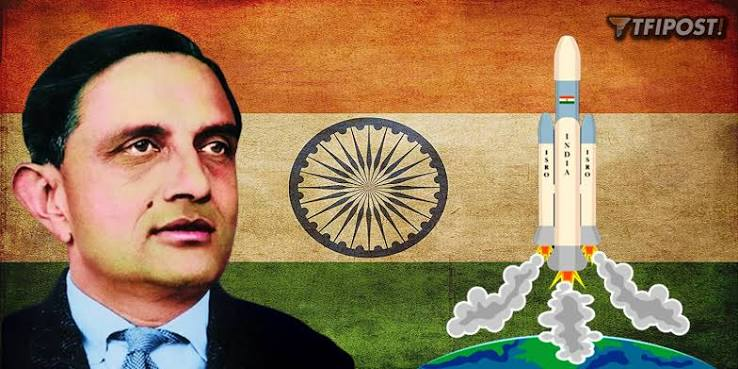
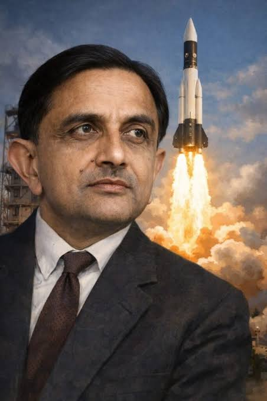
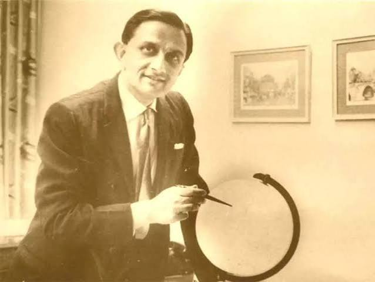
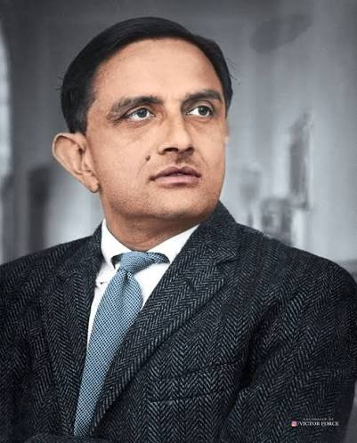

Father of the Indian Space Programme
Dr. Vikram Sarabhai was one of India's greatest scientists and visionaries. He played a pioneering role in the development of India's space programme and laid the foundation for India's achievements in space science and technology.

ABOUT THE LEGEND

Dr. Vikram Ambalal Sarabhai was an Indian physicist, scientist, innovator, and institution builder. He is widely regarded as the Father of the Indian Space Programme because of his extraordinary vision and contribution to the development of space research in India.
Born on 12 August 1919 in Ahmedabad, Gujarat, Vikram Sarabhai showed a strong interest in science from an early age. He studied at the University of Cambridge and later made important contributions to the field of cosmic ray research.
Dr. Sarabhai believed that space technology should be used for the development of society. His vision was not limited to exploring space; he wanted technology to help improve communication, education, weather forecasting, agriculture, and the lives of people across India.
His leadership led to the establishment and development of several important scientific institutions. His vision and dedication created a strong foundation for India's future success in space exploration and technology.
EDUCATIONAL JOURNEY
| Period | Institution | Qualification | Field of Study |
|---|---|---|---|
| Early Education | Gujarat College, Ahmedabad | Higher Education | Science |
| 1937 onwards | University of Cambridge, England | Natural Sciences | Physics and Mathematics |
| 1947 | University of Cambridge | Doctoral Research | Cosmic Ray Physics |
SCIENTIFIC CONTRIBUTIONS
Dr. Vikram Sarabhai played an important role in establishing India's space research programme and creating a vision for the use of space technology.
His vision and leadership were instrumental in the establishment of the Indian Space Research Organisation, which became India's leading space agency.
He established the Physical Research Laboratory in Ahmedabad, which became an important centre for scientific research.
He believed that satellites and space technology could help improve communication, education, agriculture, and weather forecasting.
Dr. Sarabhai played an important role in the establishment and development of the Indian Institute of Management Ahmedabad.
He contributed to the creation of several important scientific and educational institutions in India.
"
HONOURS AND ACHIEVEMENTS
1962
Awarded in recognition of his outstanding contributions to the field of physical sciences.
1966
Awarded for his exceptional contribution to science and technology in India.
1972
Awarded posthumously for his remarkable contribution to India's scientific and technological development.
Legacy
Remembered for establishing the foundation of India's successful journey in space science and technology.
MEMORABLE MOMENTS


GET IN TOUCH
This responsive portfolio website has been created as an academic project for the Web Application Development subject.